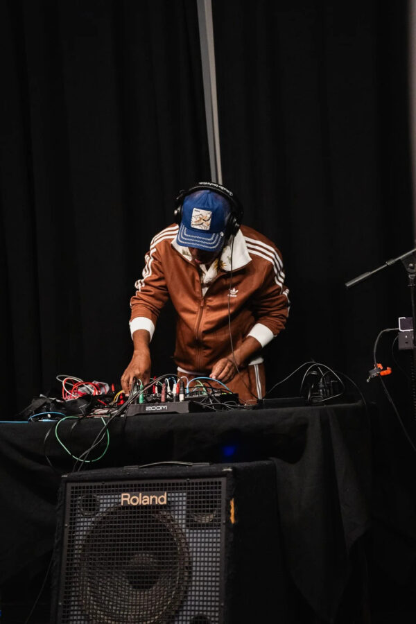

CLEAT Series: Norman Long (Album Release), Regina Martinez
We’re happy to once again welcome Norman Long back to the CLEAT system to celebrate his new album Scenes of Contestation…And the Expanded out now on Amalgam. Joining the evening will be another CLEAT alum, Regina Martinez performing solo.
This new Norman Long album is a journey from the personal and contested space of my apartment in Oakland, California, during the dot-com boom, and the housing crisis brought on by the gentrification of the early 2000s. From San Francisco, we expand to the refuge of a ranch in Woodside, California, and the desert garden of Noah Purifoy, where we are expanding to the self and the alter destiny. The recordings explore the different ways we encounter and experience various forms of contestation, one where our presence contests a space, another where our position in that space is challenged, and how climate change affects the space we inhabit. Additionally, we explore how we are creative in the spaces we occupy, record, and remember as an act of contestation.
Regina would like to thank Norman for the invitation to share an opening set for the occasion of his latest album release. The occasion happens to fall on her mother’s birthday.
Musing and self-soothing through all that gets passed down, Regina has written a letter to her mother, and her mother’s mother, to be translated and presented through CLEAT’s 16-channel speaker system. $15 / $10 w/ Student ID -Tickets Available at the Door
Artist Bios
Regina Martinez experiences sound as records of our connections and departures. Her current experiments draw from an archive of infinitely personal recordings she relates to as soundmarks: her father’s hands cleaning dried beans, the flap of our clothes outside on the line, the creak of the front gate to home. Each moment becomes its own instrument, its own layer of composition, and a washing and wringing out of memory meant to be overheard like a poem again and again.
Often under the alias, selective listening, her work evolves through vinyl dj sets, live performance and sound design for film and movement. She’s part of the family at 606 Records in Pilsen. She produces the program “alluvia’s fluid” for Chicago Public Media Institute’s Lumpen Radio.
Visit her here: selectivelistening.site